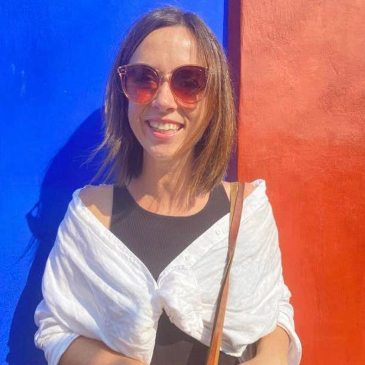

Home, clinic, virtual and school-based services in Mexico, the U.S.,
and across the world for the English-speaking population.
Meet Our Team

Celia Young, Owner, MA, CCC-SLP, SLDI
Celia is a passionate and dedicated Speech-Language Pathologist, driven by a unique combination of personal experience and a profound commitment to helping those with learning differences. Her journey in this field was shaped by years of teaching preschool, combined with her own childhood struggles with dyslexia, which led her to understand the transformative power of intervention and support. At the age of 7, Celia was diagnosed with dyslexia, an experience that left her with a deep sense of frustration and inadequacy. Fortunately, with unwavering support from her parents and dedicated educators, she received life-changing Orton-Gillingham intervention. This intervention allowed Celia to thrive in an academic setting, eventually obtaining a Master's Degree in Speech-Language Pathology from the University of Colorado, Boulder, which she reflects on as "getting a Masters in the hardest thing for my brain—language!"
Armed with her degree and a unique insight into the world of dyslexia, she began her career as a Pediatric Speech-Language Pathologist in Denver. However, she always felt an unshakeable connection to non-traditional learners and an insatiable curiosity about the intersection of traditional speech therapy and the latest research on the Science of Reading and Executive Functioning. Driven by this passion and determination, she embarked on a journey to gain specialized training in Orton-Gillingham intervention, which expanded her expertise in working with individuals with dyslexia and related learning differences. This additional knowledge has equipped her to provide the highest level of care and support to those in need. Celia is recognized by both the International Dyslexia Association and The Center for Effective Reading Instruction as a Structured Literacy Dyslexia Interventionist.
Currently, Celia resides in Mexico City with her partner. It is her mission to support and connect with families on all aspects of learning differences, from understanding the academic challenges to addressing emotional and institutional issues. Her goal is to help individuals not just survive but thrive, and to empower them to understand their unique learning differences and excel in all environments. She believes in using fun, engaging, and meaningful activities as a means of guiding children on their path to success. Her approach to therapy is grounded in personal experience, professional expertise, and unwavering dedication to those facing challenges like herself.
Tica Chalmers, M.Ed. (Curriculum & Instruction),
Literacy Specialist
Tica is an educator who has built her career around creating learning spaces where children feel seen, capable, and inspired. Her journey has taken her from classrooms in New York to international schools in Mexico and Costa Rica, where she taught across early childhood and elementary levels and gained extensive experience with the IB Primary Years Programme. Throughout her career, Tica has moved fluidly between roles—classroom teacher, curriculum developer, admissions specialist, and diversity and inclusion coordinator—each one strengthening her belief that education must honor the whole child.
Her Montessori Assistance-to-Infancy training has shaped her understanding of child development, supporting her commitment to fostering independence, curiosity, and purposeful learning from the earliest years. Her Orton-Gillingham training deepened her expertise in literacy development and equipped her with research-based tools to support early readers and students with learning differences. Fluent in English, French, Haitian Creole, and Spanish, she connects naturally with families from diverse backgrounds. Tica's work is grounded in strong academics, community, and a dedication to creating environments where every child—and every family—feels a genuine sense of belonging.

Ellie McIvor, M.Ed. (Curriculum & Instruction),
Ellie McIvor, M.Ed. (Curriculum & Instruction),
Literacy Specialist
Ellie is an educator with over ten years of experience championing literacy and language across different contexts. She approaches her work with a belief that every student deserves the tools to express themselves and tell their story. Originally from Michigan, Ellie received her Masters in Curriculum and Instruction and spent ten years in Portland, Oregon as an English teacher, curriculum coach, and language specialist.
She has a background in theater and a passion for bringing creativity, storytelling, and play into educational settings. Ellie now serves as the Secondary English Language Coordinator at an international school in Mexico City where she is building a language program that supports both rigor and belonging. With recent training in structured literacy and Orton-Gillingham techniques, Ellie is now equipped and excited to bridge her experience with multilingual students with the foundational needs of early readers and ensure that literacy builds confidence and access for every child.